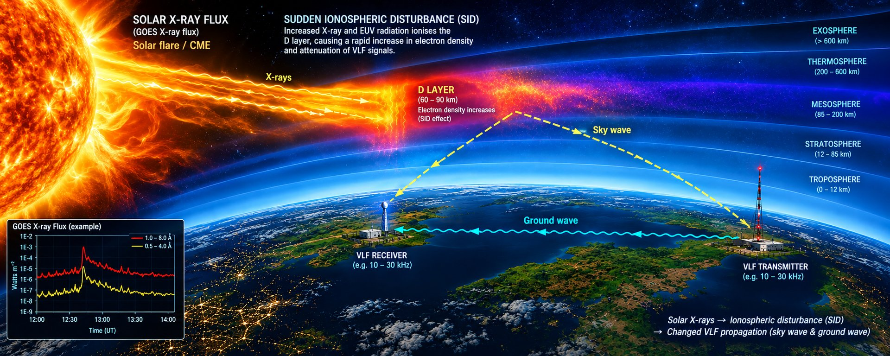

Origins
The UK Radio Astronomy Association was established in 2008 as a registered charity (registration no 1123866) in the United Kingdom. UKRAA’s objectives are to promote the science of radio astronomy and all branches of radio astronomical research. Prior to UKRAA’s formation, British Astronomical Association’s Radio Astronomy Group (RAG) members had designed and built working protypes of a VLF Receiver and Magnetometer. UKRAA was set up to handle the manufacture and sale of these products and the production of technical manuals covering the use of the products and the background science.
Not for profit
UKRAA is a not for profit business. Any surplus income funds the development of new products and our outreach activities. To keep our prices low UKRAA relies on the volunteers and Trustees giving their time.
Activities
Our primary activity is to supply equipment to amateur astronomers and other interested researchers. The design of new products and the manufacture of equipment for sale is all carried out by volunteers. To promote radio astronomy to amateur astronomers we give talks to local Astronomical Societies and amateur radio clubs and have provided support to schools and university departments on educational projects.
Detecting sudden ionospheric disturbances from the comfort of your armchair
The UKRAA VLF Receiver is designed to record Sudden Ionospheric Disturbances (SIDs) induced by solar flares. It does this by monitoring transmissions from Earth-based beacons, which are affected by changes in the ionosphere, giving an indirect indication of events on the Sun. The main motivation for this work is to correlate these radio observations of solar activity with those from optical observers, and to follow the cycles of sunspots as they appear on the Sun.
The UKRAA VLF Receiver output is a voltage varying with time, which may be fed to a data logger.
The UKRAA VLF Receiver has a tuning range of about 12kHz to 35kHz, requires a supply of 15v DC at 35mA, and provides an output signal at 0 to 2.5 Volts or 0 to 5Volts. It is designed to work with the UKRAA VLF loop Aerial and the UKRAA VLF Aerial Tuning Unit.
The UKRAA VLF Receiver (in kit form: Part number UKR002; built and tuned to 23.4kHz: Part number UKR003; built and tuned in Enclosure: Part number UKR004), a UKRAA VLF loop Aerial (in kit form: Part number UKR005/UKR006; built: Part number UKR007) and a UKRAA VLF Aerial Tuning Unit (Part number UKR008) are available from our website at ukraa.com. You may also find the UKRAA VLF Multi Frequency Signal Generator (Part number UKR011) useful during tuning of the system.
The UKRAA VLF loop Aerial is designed to receive VLF radio transmissions at suitable frequencies for the UKRAA VLF Receiver. It is used in conjunction with a tuning unit such as the UKRAA VLF Aerial Tuning Unit, to form a parallel tuned circuit providing an input signal to the UKRAA VLF Receiver in the frequency range 15-35 kHz.
The UKRAA VLF loop Aerial needs to be tuned via the UKRAA VLF Aerial Tuning Unit to the required VLF frequency.
The VLF Aerial Tuning Unit (ATU) is designed to provide a means of tuning a VLF loop aerial over a wide range (50 pF to 3500 pF) of capacitances. The ATU uses a switchable bank of fixed value capacitors and a variable tuning capacitor.
When used in conjunction with the UKRAA VLF Aerial, it will form a parallel tuned circuit to provide an input signal to the VLF Receiver in the frequency range 15-35 kHz, enabling the latter to receive VLF radio transmissions at suitable frequencies.
The ATU is a passive device and does not require a power supply.
The Multi Frequency Signal Generator has been designed to provide a local signal source for tuning the VLF receiver and the loop aerial to the frequency of one of various military transmitters at such a range that its signal will normally provide useful ionospheric responses in the event of a Solar flare.
It allows the user to simulate VLF signals locally, facilitating the tuning and calibration of the VLF receiver and loop aerial without relying solely on distant transmitters.
Full software is available to record, process and plot events and display on your local intranet using a Raspberry Zero 2W.
UKRAA VLF SID detector system
24-hour rolling plots refreshed every 5 minutes
Waiting for the latest plot manifest.
X-ray flux and solar flare data courtesy of NOAA SWPC. Sunrise/sunset times from sunrise-sunset.org.
This data is from my VLF receiver
No accuracy is claimed for any published data
X-ray flux and solar flare data courtesy of NOAA SWPC. Sunrise/sunset times from sunrise-sunset.org.